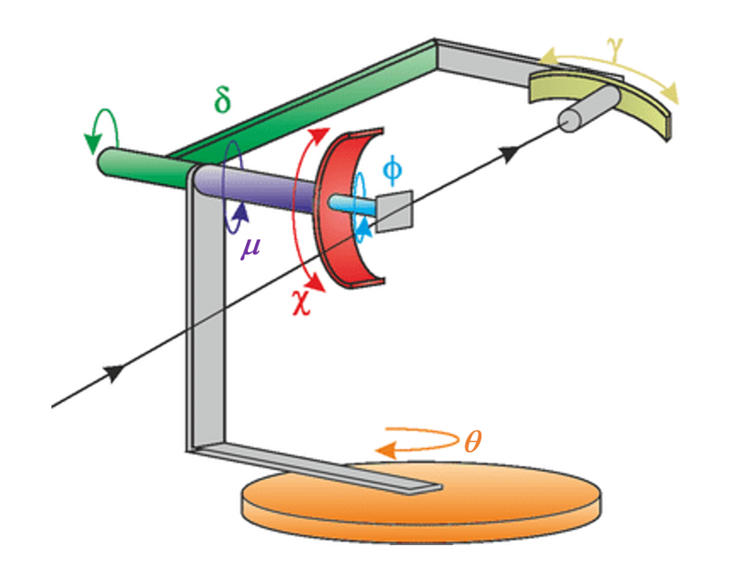

NSLS-II tardis diffractometer#
The steps to setup TARDIS in hklpy2 are described below. Includes adding a sample and orienting it with the method of Busing & Levy, Acta Cryst 22 (1967) 457, then calculating and moving in $hkl$.
TARDIS is an environmental chamber with a 3-axis diffractometer (see hkl_soleil, E6C geometry in the tables). Some of the real axes are renamed. Some E6C axes do not exist in TARDIS; they are fixed at zero.
The TARDIS axes, in the order expected by the E6C geometry:
TARDIS axis |
E6C axis |
limit(s) |
|---|---|---|
theta |
mu |
-181 .. 181 |
mu |
omega |
0 |
chi |
chi |
0 |
phi |
phi |
0 |
delta |
gamma |
-5 .. 180 |
gamma |
delta |
-5 .. 180 |
The next schematic shows the TARDIS axes in the E6C geometry. Energy units are eV, wavelength units are angstrom.

Experimental data for comparison#
This example uses data from @cmazzoli’s ESRF notes.
# sample lattice parameters: a=9.069, b=9.069, c=10.390, alpha=90, beta=90, gamma=120
# Experimentally found reflections @ Lambda = 1.61198 A
# h, k, l delta theta gamma
# (3, 3, 0) = [64.449, 25.285, 0, 0, 0, -0.871]
# (5, 2, 0) = [79.712, 46.816, 0, 0, 0, -1.374]
# (4, 4, 0) = [90.628, 38.373, 0, 0, 0, -1.156]
# (4, 1, 0) = [56.100, 40.220, 0, 0, 0, -1.091]
# @ Lambda = 1.60911
# (6, 0, 0) = [75.900, 61.000, 0, 0, 0, -1.637]
# @ Lambda = 1.60954
# (3, 2, 0) = [53.090, 26.144, 0, 0, 0, -.933]
# (5, 4, 0) = [106.415, 49.900, 0, 0, 0, -1.535]
# (4, 5, 0) = [106.403, 42.586, 0, 0, 0, -1.183]
Create the tardis object.#
import hklpy2
from hklpy2.user import add_sample, calc_UB, cahkl, cahkl_table, pa, set_diffractometer, setor, wh
tardis = hklpy2.creator(
name="tardis",
geometry="E6C",
solver="hkl_soleil",
reals=dict( # Use TARDIS names, in order expected by E6C
theta=None, # Replace 'None' with an EPICS motor PV (e.g., "ioc:m1").
mu=None,
chi=None,
phi=None,
delta=None,
gamma=None,
),
labels=["tardis"],
)
Configure some basic operating parameters.
NOTE: Length units are angstrom, angles are degrees, and energy (when available) is eV.
tardis.beam.wavelength_units.put("angstrom")
tardis.beam.energy_units.put("eV")
tardis.core.constraints["theta"].limits = -181, 181
tardis.core.constraints["mu"].limits = 0, 0
tardis.core.constraints["chi"].limits = 0, 0
tardis.core.constraints["phi"].limits = 0, 0
tardis.core.constraints["delta"].limits = -5, 180
tardis.core.constraints["gamma"].limits = -5, 180
Set the operating mode.
tardis.core.mode = "lifting_detector_mu"
Add a sample#
Set this is the default diffractometer. Then add the sample.
set_diffractometer(tardis)
add_sample("cmazzoli", a=9.069, c=10.390, gamma=120.0)
Sample(name='cmazzoli', lattice=Lattice(a=9.069, c=10.39, gamma=120.0, system='hexagonal'))
Set the wavelength of the source.#
tardis.beam.wavelength.put(1.61198) # ophyd signal, use .put()
Orient the sample#
Add two observed reflections and the motor positions associated with those hkl values.
We specify the motors by name (keyword arguments) so they can be specified in any order we choose.
r1 = setor(
3, 3, 0,
delta=64.449, gamma=-0.871, theta=25.285, mu=0, chi=0, phi=0,
name="r1",
)
r2 = setor(
5, 2, 0,
delta=79.712, gamma=-1.374, theta=46.816, mu=0, chi=0, phi=0,
name="r2",
)
Calculate the $UB$ (orientation) matrix.
calc_UB(r1, r2)
[[0.313235509421, -0.480759304678, 0.011136539049],
[0.735907238528, 0.639427042267, 0.010037733273],
[-0.017988976072, -0.001760659657, 0.604548030557]]
Save the orientation to a file#
tardis.export(
"dev_tardis-cmazzoli.yml",
comment="NSLS-II tardis with oriented sample from @cmazzoli",
)
Show that configuration.
%pycat dev_tardis-cmazzoli.yml
#hklpy2 configuration file
_header:
datetime: '2025-04-09 21:38:25.942848'
hklpy2_version: 0.0.29.dev43+gdc399a0.d20250410
python_class: Hklpy2Diffractometer
file: dev_tardis-cmazzoli.yml
comment: NSLS-II tardis with oriented sample from @cmazzoli
name: tardis
axes:
pseudo_axes:
- h
- k
- l
real_axes:
- theta
- mu
- chi
- phi
- delta
- gamma
axes_xref:
h: h
k: k
l: l
theta: mu
mu: omega
chi: chi
phi: phi
delta: gamma
gamma: delta
extra_axes:
h2: 0
k2: 0
l2: 0
psi: 0
sample_name: cmazzoli
samples:
sample:
name: sample
lattice:
a: 1
b: 1
c: 1
alpha: 90.0
beta: 90.0
gamma: 90.0
reflections: {}
reflections_order: []
U:
- - 1
- 0
- 0
- - 0
- 1
- 0
- - 0
- 0
- 1
UB:
- - 6.283185307179586
- 0.0
- 0.0
- - 0.0
- 6.283185307179586
- 0.0
- - 0.0
- 0.0
- 6.283185307179586
digits: 4
cmazzoli:
name: cmazzoli
lattice:
a: 9.069
b: 9.069
c: 10.39
alpha: 90
beta: 90
gamma: 120.0
reflections:
r1:
name: r1
geometry: E6C
pseudos:
h: 3
k: 3
l: 0
reals:
theta: 25.285
mu: 0
chi: 0
phi: 0
delta: 64.449
gamma: -0.871
wavelength: 1.61198
digits: 4
r2:
name: r2
geometry: E6C
pseudos:
h: 5
k: 2
l: 0
reals:
theta: 46.816
mu: 0
chi: 0
phi: 0
delta: 79.712
gamma: -1.374
wavelength: 1.61198
digits: 4
reflections_order:
- r1
- r2
U:
- - 0.391544524019
- -0.919974864499
- 0.018415602128
- - 0.919884370594
- 0.391838271968
- 0.016598595077
- - -0.022486227972
- 0.010441135564
- 0.999692628881
UB:
- - 0.313235509421
- -0.480759304678
- 0.011136539049
- - 0.735907238528
- 0.639427042267
- 0.010037733273
- - -0.017988976072
- -0.001760659657
- 0.604548030557
digits: 4
constraints:
theta:
label: theta
low_limit: -181.0
high_limit: 181.0
class: LimitsConstraint
mu:
label: mu
low_limit: 0.0
high_limit: 0.0
class: LimitsConstraint
chi:
label: chi
low_limit: 0.0
high_limit: 0.0
class: LimitsConstraint
phi:
label: phi
low_limit: 0.0
high_limit: 0.0
class: LimitsConstraint
delta:
label: delta
low_limit: -5.0
high_limit: 180.0
class: LimitsConstraint
gamma:
label: gamma
low_limit: -5.0
high_limit: 180.0
class: LimitsConstraint
solver:
name: hkl_soleil
description: HklSolver(name='hkl_soleil', version='5.1.2', geometry='E6C', engine_name='hkl',
mode='bissector_vertical')
geometry: E6C
real_axes:
- mu
- omega
- chi
- phi
- gamma
- delta
version: 5.1.2
engine: hkl
beam:
class: WavelengthXray
source_type: Synchrotron X-ray Source
energy: 7691.422873644113
wavelength: 1.61198
energy_units: eV
wavelength_units: angstrom
Calculate motor positions for hkl#
Just calculate the motor positions. These commands do not move the motors.
cahkl(4, 0, 0)
Hklpy2DiffractometerRealPos(theta=47.298769610172, mu=0, chi=0, phi=0, delta=48.462235401856, gamma=-1.057775860103)
cahkl_table((4, 0, 0), (4, 4, 0))
======= = ======= == === === ======= =======
(hkl) # theta mu chi phi delta gamma
======= = ======= == === === ======= =======
(4 0 0) 1 47.2988 0 0 0 48.4622 -1.0578
(4 4 0) 1 38.3762 0 0 0 90.6303 -1.1613
======= = ======= == === === ======= =======
Move#
… to $Q= (4 \ 1 \ 0)$
tardis.move(4, 1, 0)
MoveStatus(done=True, pos=tardis, elapsed=0.0, success=True, settle_time=0.0)
Where is the tardis now?
wh()
wavelength=1.61198
h=4.0, k=1.0, l=0
theta=40.2199, mu=0, chi=0, phi=0, delta=56.097, gamma=-1.0837
Show more details.
pa()
diffractometer='tardis'
HklSolver(name='hkl_soleil', version='5.1.2', geometry='E6C', engine_name='hkl', mode='lifting_detector_mu')
Sample(name='cmazzoli', lattice=Lattice(a=9.069, c=10.39, gamma=120.0, system='hexagonal'))
Reflection(name='r1', h=3, k=3, l=0)
Reflection(name='r2', h=5, k=2, l=0)
Orienting reflections: ['r1', 'r2']
U=[[0.391544524019, -0.919974864499, 0.018415602128], [0.919884370594, 0.391838271968, 0.016598595077], [-0.022486227972, 0.010441135564, 0.999692628881]]
UB=[[0.313235509421, -0.480759304678, 0.011136539049], [0.735907238528, 0.639427042267, 0.010037733273], [-0.017988976072, -0.001760659657, 0.604548030557]]
constraint: -181.0 <= theta <= 181.0
constraint: 0.0 <= mu <= 0.0
constraint: 0.0 <= chi <= 0.0
constraint: 0.0 <= phi <= 0.0
constraint: -5.0 <= delta <= 180.0
constraint: -5.0 <= gamma <= 180.0
Mode: lifting_detector_mu
beam={'class': 'WavelengthXray', 'source_type': 'Synchrotron X-ray Source', 'energy': 7691.422873644113, 'wavelength': 1.61198, 'energy_units': 'eV', 'wavelength_units': 'angstrom'}
h=4.0, k=1.0, l=0
theta=40.2199, mu=0, chi=0, phi=0, delta=56.097, gamma=-1.0837